Copyright © 2008, 2023 Obeo - All rights reserved. This program and the accompanying materials are made available under the terms of the Eclipse Public License v1.0
Graal est une méthode d’analyse dont le but est la modélisation du besoin utilisateur et la description des Interfaces Homme-Machine d’un système d’information tant d’un point de vue statique que d’un point de vue dynamique.
L’objectif de la méthode Graal est de capturer et formaliser le besoin utilisateur au travers d’une analyse de la tâche.
L' outillage Graal du Network Obeo fournit un ensemble d’outils permettant l’adoption de la méthodologie Graal au sein d’Eclipse. L’outillage fournit des éditeurs graphiques, tabulaires ou arborescents ainsi que des vues Eclipse dédiées.
Cette documentation a pour objectif de présenter cet outillage Graal et non pas de présenter de manière exhaustive la méthodologie Graal.
Un assistant permet la création de modèles Graal. Cet assistant est accessible via le menu :
File > New > Other ... > Graal Model (Catégorie IS Designer)
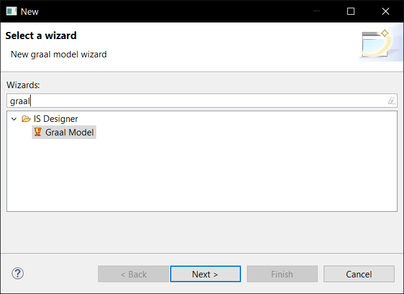
Cet assistant permet de définir
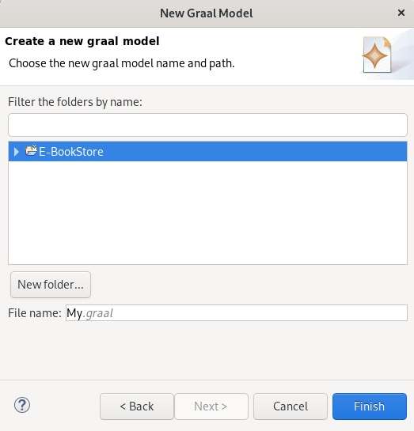
Une fois l’assistant validé, le modèle est créé, les représentations Task Graph, Actors Graph, Use Cases Main view et Domain Namespaces Hierarchy sont créées. La représentation Task Graph est ouverte afin de commencer l'édition.
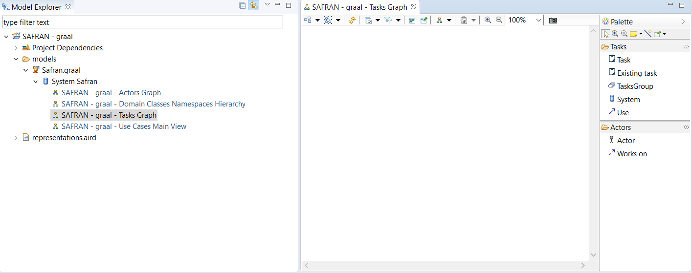
Lorsqu’un modèle graal est créé à l’aide de ce wizard, les points de vues
Graal Methodology,
Graal Methodology (Safr@n Consolidated view),
Interaction,
State Machine et
Environment View sont activés.
Le point de vue
Graal Methodology est décrit dans la section suivante. Le point de vue
Graal Methodology (Safr@n Consolidated view) est décrit dans la section de documentation
Safr@n – Graal Methodology (Safr@n consolidated view). Le point de vue
Interaction est décrit dans la section de documentation
Obeo Network – Interaction tooling. Le point de vue
State Machine est décrit dans la section de documentation
Obeo Network – State Machine tooling. Le point de vue
Environment View permet d’activer les vues propriétés EEF.
L’outillage Graal fournit un point de vue dédié à la méthodologie Graal. Ce point de vue permet de visualiser et modifier un modèle Graal via plusieurs types de diagrammes.
L’ouverture d’une session de travail sur un modèle Graal se fait de manière classique :
Le point de vue Graal Methodology doit être sélectionné sur la session ouverte. Pour vérifier si c’est bien le cas lancer le menu suivant la session :
Viewpoint Selection
Choisir le point de vue Graal Methodology :
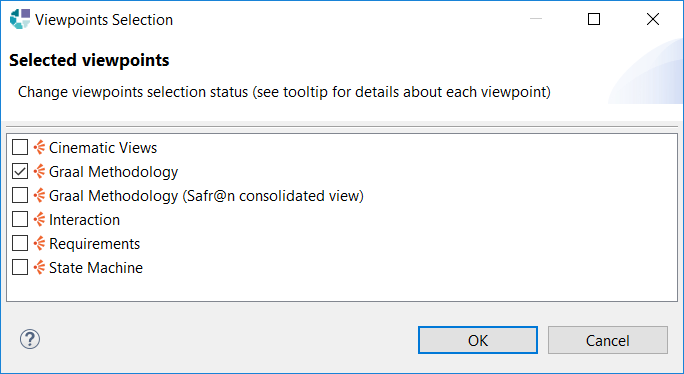
Une fois le point de vue activé, il devient possible de créer ou visualiser les diagrammes Graal.
Chaque type de diagramme est rattaché à un concept Graal précis. Par exemple, un plan d’action est rattaché à une Task, un graphe de tâches est rattaché à un System ou à un TasksGroup.
Pour créer un diagramme d’un certain type, il suffit de sélectionner l'élément du modèle auquel on veut rattacher le diagramme dans la vue Model Explorer puis, avec un clic droit, de sélectionner le menu :
New... > #Nom du diagramme#
puis renseigner le nom du diagramme et, enfin, valider.
Par exemple sur un System, trois types de diagrammes peuvent être créés comme présenté sur la capture d'écran suivante :
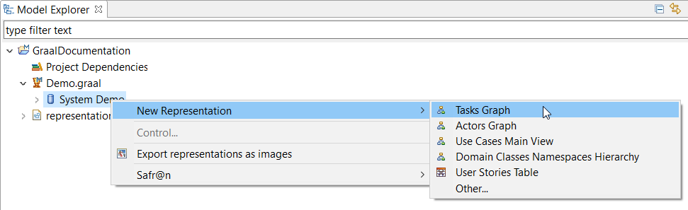
Pour ouvrir un diagramme il suffit de double-cliquer sur le diagramme dans la vue Model Explorer. Attention seuls les diagrammes correspondants aux points de vue sélectionnés sur la session sont affichés dans la vue Model Explorer.
Un graphe de tâches (ou
Tasks Graph) peut être associé à un
System.
Pour chaque
System un seul graphe de tâches peut être créé au maximum.
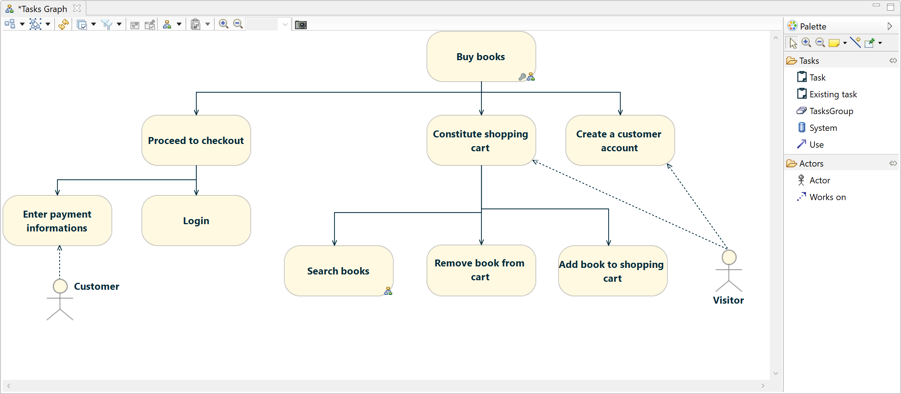
Les éléments suivants sont affichés sur le diagramme :
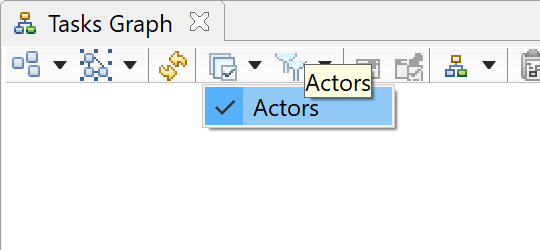
Les outils fournis par la palette sont :
|
|
Création d’une tâche. |
|
|
Import d’une tâche existante. Une boîte de dialogue permet de choisir une tâche existante. La tâche est importée dans le groupe actuel et détachée de son conteneur précédent. |
|
|
Création d’un groupe. |
|
|
Création d’un système. |
|
|
Création de lien d’utilisation entre tâches, groupes et systèmes. Les liens d’utilisation se font normalement entre tâches, l’outil de création peut néanmoins être utilisé avec un système ou un groupe comme extrémité : dans ce cas une boîte de dialogue s’ouvre pour permettre de choisir la tâche du système ou du groupe sur laquelle le lien d’utilisation sera réellement créé. |
|
|
Association entre une tâche et un acteur. Cet outil s’utilise lorsque l’acteur voulu n’est pas déjà visible sur le diagramme. Choisir la tâche à laquelle on souhaite associer l’acteur, une boîte de dialogue s’ouvre et permet de sélectionner un acteur. L’acteur apparaît alors sur le diagramme ainsi qu’un lien de rattachement avec la tâche. Disponible uniquement si le calque Actors est activé |
|
|
Création d’une association entre une tâche et un acteur déjà visible sur le diagramme. Disponible uniquement si le calque Actors est activé |
Le menu contextuel (visible suite à un clic droit sur un élément du diagramme) permet les actions suivantes :
Il est possible de naviguer depuis ce diagramme vers d’autres diagrammes :
Un graphe de tâches (ou
Tasks Graph) peut être associé à un
TasksGroup.
Pour chaque
TasksGroup un seul graphe de tâches peut être créé au maximum.
Les éléments suivants sont affichés sur le diagramme :
Les outils fournis par la palette sont :
|
|
Création d’une nouvelle tâche. |
|
|
Import d’une tâche existante. Une boîte de dialogue permet de choisir une tâche existante. La tâche est importée dans le groupe actuel et détachée de son conteneur précédent. |
|
|
Création d’un groupe. |
|
|
Création de lien d’utilisation entre tâches, groupes. Les liens d’utilisation se font normalement entre tâches, l’outil de création peut néanmoins être utilisé avec un groupe comme extrémité : dans ce cas une boîte de dialogue s’ouvre pour permettre de choisir la tâche du groupe sur laquelle le lien d’utilisation sera réellement créé. |
|
|
Association entre une tâche et un acteur. Cet outil s’utilise lorsque l’acteur voulu n’est pas déjà visible sur le diagramme. Choisir la tâche à laquelle on souhaite associer l’acteur, une boîte de dialogue s’ouvre et permet de sélectionner un acteur. L’acteur apparaît alors sur le diagramme ainsi qu’un lien de rattachement avec la tâche. Disponible uniquement si le calque Actors est activé |
|
|
Création d’une association entre une tâche et un acteur déjà visible sur le diagramme. Disponible uniquement si le calque Actors est activé |
Le menu contextuel (visible suite à un clic droit sur un élément du diagramme) permet les actions suivantes :
Il est possible de naviguer depuis ce diagramme vers d’autres diagrammes :
Un plan d’action (ou
Actions Plan) est associé à une
Task.
Pour chaque
Task un seul plan d’action peut être créé au maximum.
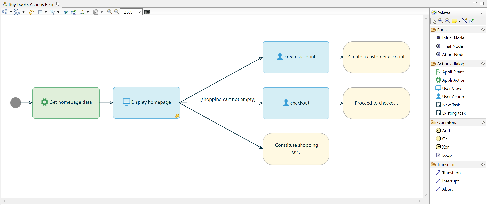
Les éléments suivants sont affichés sur le diagramme :
Les outils fournis par la palette sont :
| 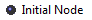 | Création d’un noeud initial. Un noeud initial représente l’entrée d’un plan d’action. Un noeud initial est normalement créé pour tout nouveau plan d’action. |
| 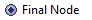 | Création d’un noeud final. Un noeud final représente la fin normale d’un plan d’action. |
| 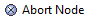 | Création d’un noeud d’abandon. Un noeud d’abandon représente la fin d’un plan d’action sur un abandon. |
| 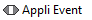 | Création d’un noeud Appli Event. |
| 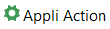 | Création d’un noeud Appli Action. |
| Création d’un noeud User View. | |
| 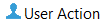 | Création d’un noeud User Action. |
| 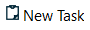 | Création d’un noeud pointant vers une nouvelle tâche. La nouvelle tâche est ajoutée au système ou au groupe contenant la tâche courante : la nouvelle tâche est donc une soeur de la tâche courante. |
| 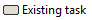 | Création d’un noeud pointant vers une tâche existante. |
| Création d’un opérateur ET. | |
| Création d’un opérateur OU. | |
| Création d’un opérateur OU exclusif. | |
| 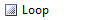 | Création d’une boucle. |
| Création d’une transition normale entre deux noeuds. | |
|
|
Création d’une transition d’interruption entre deux noeuds. |
| Création d’une transtion d’abandon entre deux noeuds. |
Il est possible de naviguer depuis ce diagramme vers d’autres diagrammes :
Un graphe des acteurs (ou
Actors Graph) peut être associé à un
System. Ce graphe permet de créer/modifier les acteurs du système.
Pour chaque
System un seul graphe des acteurs peut être créé au maximum.
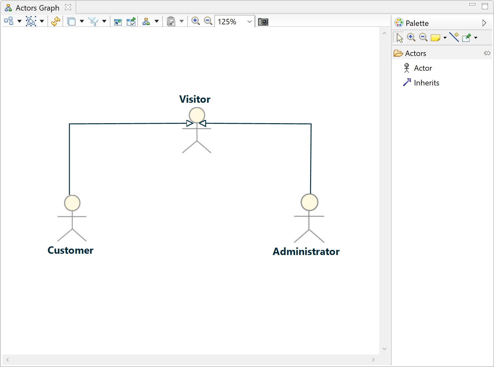
Les éléments suivants sont affichés sur le diagramme :
Les outils fournis par la palette sont :
| 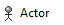 | Création d’un acteur dans le système. |
| 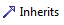 | Création d’un lien d’héritage entre deux acteurs. |
Un graphe global des Use Cases (ou
Use Cases Main View) peut être associé à un
System. Ce graphe permet de visualiser, créer, modifier les
Use Cases du système.
Pour chaque
System un seul graphe global des Use Cases peut être créé au maximum.
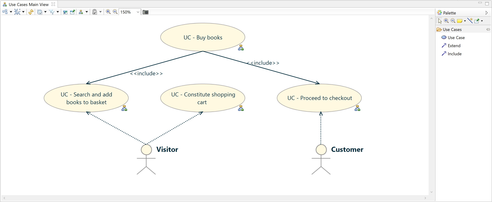
Les éléments suivants sont affichés sur le diagramme :
Les outils fournis par la palette sont :
| 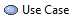 | Création d’un use case dans le système. |
| 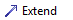 | Création d’un lien d’extension entre deux use cases. |
| 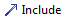 | Création d’un lien d’inclusion entre deux use cases. |
Il est possible de naviguer depuis ce diagramme vers d’autres diagrammes :
Un diagramme de Use Case (ou
Use Case Diagram) peut être associé à un
Use Case. Ce graphe permet de visualiser les tâches référencées par un Use Case.
Le graphe global des Use Cases d’un
System est normalement créé automatiquement à la création d’une session.
Pour chaque
System un seul graphe global des Use Cases peut être créé au maximum.
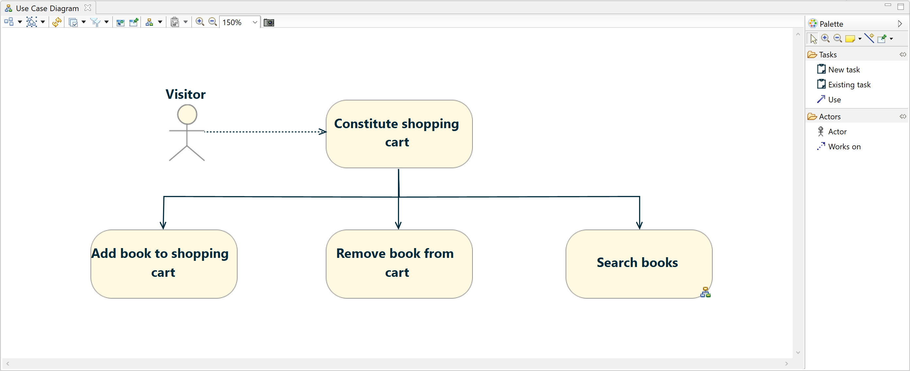
Les éléments suivants sont affichés sur le diagramme :
Les outils fournis par la palette sont :

|
Création d’une nouvelle tâche et ajout au use case courant. La tâche est créée dans le System contenant le use case courant. |
| 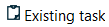 | Ajout d’une tâche existante au use case courant. |

|
Création d’un lien d’utilisation entre deux tâches. |
| 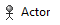 | Association entre une tâche et un acteur. Cet outil s’utilise lorsque l’acteur voulu n’est pas déjà visible sur le diagramme. Choisir la tâche à laquelle on souhaite associer l’acteur, une boîte de dialogue s’ouvre et permet de sélectionner un acteur. L’acteur apparaît alors sur le diagramme ainsi qu’un lien de rattachement avec la tâche. Disponible uniquement si le calque Actors est activé |

|
Création d’une association entre une tâche et un acteur déjà visible sur le diagramme. Disponible uniquement si le calque Actors est activé |
Le menu contextuel (visible suite à un clic droit sur un élément du diagramme) permet les actions suivantes :
Il est possible de naviguer depuis ce diagramme vers d’autres diagrammes :
Les classes participantes (
Domain Classes) sont organisées en packages (
Namespaces).
La gestion de la hiérarchie de packages se fait en utilisant le diagramme
Domain Classes Namespaces Hierarchy.
Ce diagramme peut être créé sur l’objet principal
System.
Ce diagramme permet de créer, modifier ou supprimer des packages ainsi que d’accéder facilement au diagramme de gestion des classes participantes d’un package.
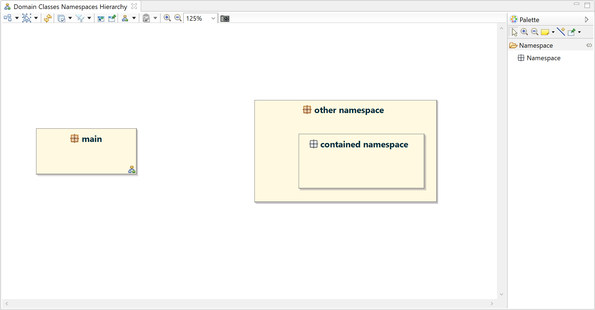
Les éléments suivants sont affichés sur le diagramme :
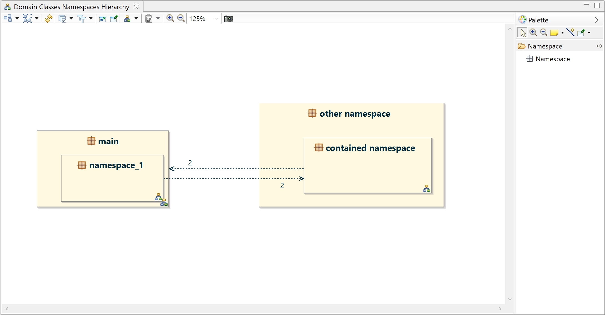
Les outils fournis par la palette sont :

|
Création d’un package. Un package peut être créé sur le fond du diagramme ou à l’intérieur d’un autre package. |
Il est possible de naviguer depuis ce diagramme vers un autre diagramme :
Un diagramme de classes participantes est associé à un package ( Namespace). Il permet de gérer les classes participantes du package.
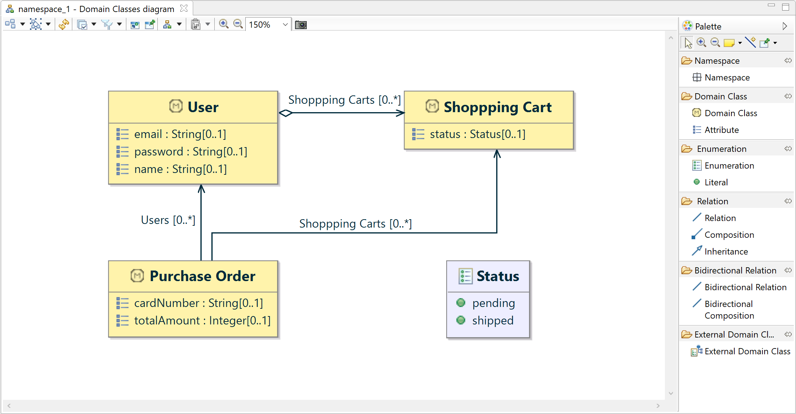
Les éléments suivants sont affichés sur le diagramme :
Les outils fournis par la palette sont :
|
|
Création d’un sous-package. |

|
Création d’une classe participante. |

|
Création d’un attribut de classe participante. |

|
Création d’une énumération. |

|
Création d’une valeur d'énumération. |

|
Création d’une relation simple. |

|
Création d’une relation de composition. |

|
Création d’un lien d’héritage. |

|
Création d’une relation simple bidirectionnelle. |

|
Création d’une relation de contenance bidirectionnelle. |

|
Ajout d’une classe participante externe. Cet outil permet de faire apparaitre une classe participante définie dans un autre package pour créer des relations avec les classes du package courant. Cet outil est activable via le calque External Domain Classes |
Graal permet de modéliser des User Stories. Une user story permet de décrire un enchaînement de tâches et un parcours dans un plan d’actions.
la gestion des User Stories se fait via une vue Eclipse dédiée. Pour ouvrir cette vue :
Window > Show View > Other... > Other > User Stories
Le raccourci clavier
Shift + Ctrl + 3 permet aussi d’ouvrir cette vue plus facilement en saisissant les premiers caractères de la chaîne
user stories. La liste des menus et vues se réduit en fonction de la saisie.
Ce raccourci est également utilisable pour les autres vues Eclipse.
La vue peut être positionnée à l’emplacement souhaité à côté de l'éditeur de diagrammes (à droited dans l’exemple suivant) :
Dès qu’un élément Graal est sélectionné sur un diagramme ou dans la vue Model Explorer, les User Stories du système sont affichées dans la vue.
Le bouton permet de créer une User Story.
Une boîte de dialogue permettant de saisir les nom et description de la nouvelle User Story s’ouvre.
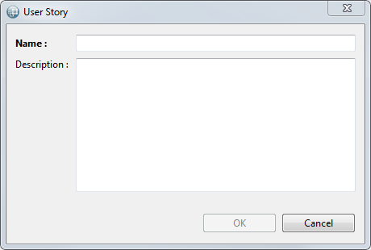
Pour modifier une User Story, sélectionner la User Story et cliquer sur le bouton devenu actif. La boîte de dialogue semblable à celle de création d’une User Story s’affiche et permet la modification.
Pour supprimer une User Story, sélectionner la User Story et cliquer sur le bouton . Un message de confirmation s’affiche avant que la suppression ne soit effectuée.
La case à cocher devant le nom d’une User Story permet de :
| 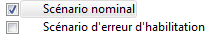 | Les éléments sélectionnés sur le diagramme sont tous associés à la user story Scénario nominal. Aucun n’est associé à la user story Scénario d’erreur d’habilitation. |
| 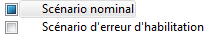 | Certains des éléments sélectionnés sur le diagramme sont associés à la user story Scénario nominal. Aucun n’est associé à la user story Scénario d’erreur d’habilitation. |
Les actions possibles sont :
| Un clic sur la case à cocher provoque l’association de tous les éléments sélectionnés avec la user story. | |
| Un clic provoque la dissociation de tous les éléments sélectionnés de la user story. | |
| Un clic provoque la dissociation de tous les éléments sélectionnés de la user story. Il n’y a donc aucun effet pour les éléments sélectionnés qui n'étaient pas associés à la user story. |
Un double-clic sur une User Story ou un clic sur le bouton provoque l’affichage de la user story sur les différents diagrammes :
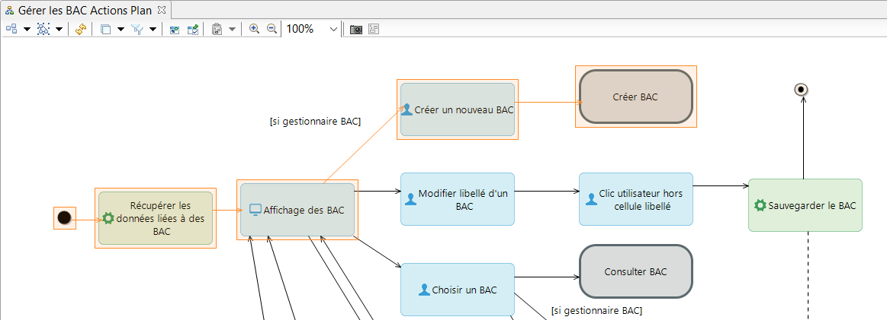
La gestion des exigences pour un modèle Graal utilise le mécanisme transverse de gestion des exigences fourni par l’outillage.
Se référer à la documentation
Obeo Network – Requirements Tooling dans l’aide d’Eclipse.
L’outillage Graal ajoute néanmoins 2 matrices de traçabilité des exigences spécifiques à Graal.
Une fois le point de vue Requirements (Graal consolidated view) activé, 2 nouvelles matrices de traçabilité peuvent être créées sur un objet Repository

Cette matrice de traçabilité offre une vue consolidée des tâches Graal concernées par des exigences.
Dans la colonne de gauche, les catégories et exigences sont affichées sous forme arborescente.
Ensuite, pour chaque tâche Graal concernée par une exigence, une colonne est affichée et des «X» apparaissent pour indiquer les exigences rattachées.
La vue est consolidée au niveau tâche, si par exemple une exigence est rattachée au niveau d’une
AppliAction d’une tâche l’exigence apparaîtra rattachée à cette tâche sur la matrice. C’est pour cela que les liens de rattachement ne sont pas éditables à partir de cette matrice.

Cette matrice de traçabilité offre une vue consolidée des use cases Graal concernés par des exigences.
Dans la colonne de gauche, les catégories et exigences sont affichées sous forme arborescente.
Ensuite, pour chaque use case Graal concerné par une exigence, une colonne est affichée et des «X» apparaissent pour indiquer les exigences rattachées.
La vue est consolidée au niveau use case, si par exemple une exigence est rattachée au niveau d’une
AppliAction d’une tâche ou au niveau d’une tâche, l’exigence apparaîtra rattachée aux use cases concernés par la tâche. C’est pour cela que les liens de rattachement ne sont pas éditables à partir de cette matrice.

Il est possible d’attacher de la documentation aux éléments d’un modèle Graal. Le mécanisme utilisé est le mécanisme transverse de gestion de la documentation fourni par l’outillage.
Se référer à la documentation
Obeo Network – Documentation Tooling dans l’aide d’Eclipse.
Il est possible de créer des diagrammes d’interaction pour les éléments d’un modèle Graal.
Se reférer à la documentation
Obeo Network – Interaction Tooling dans l’aide d’Eclipse.
Il est possible de créer des diagrammes de machines à états pour les éléments d’un modèle Graal.
Se reférer à la documentation
Obeo Network – State Machine Tooling dans l’aide d’Eclipse.